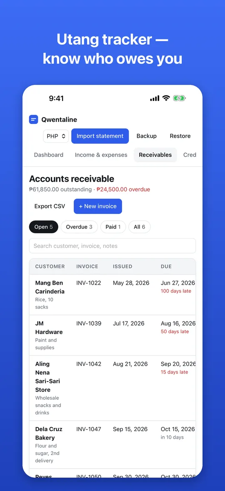
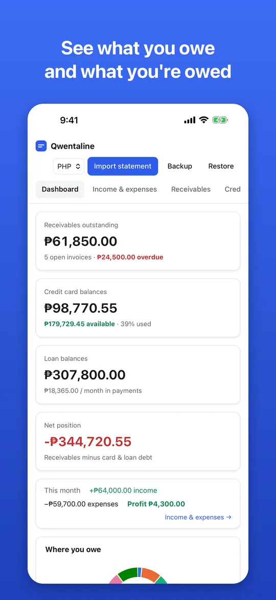
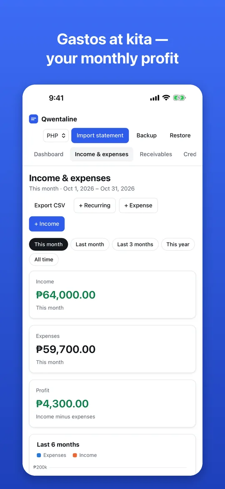
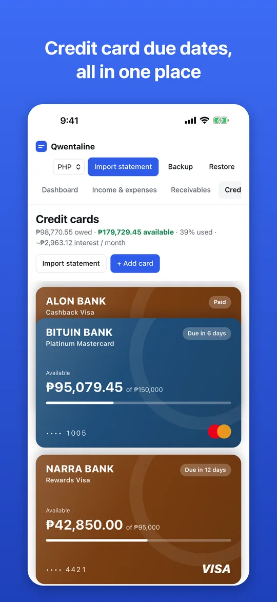
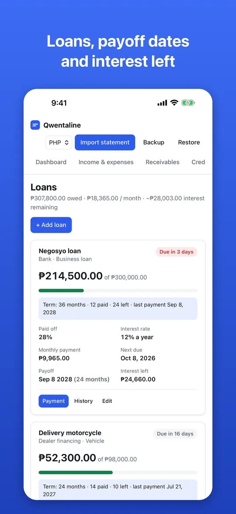

Utang tracker & listahan ng utang
Keep a clean listahan of who owes you — customers, invoices and pautang.
- Partial payments and proof-of-payment screenshots
- Overdue alerts and how many days late
- Receivables aging at a glance
Qwentaline helps Filipino small-business owners know who owes them, what bills and credit card payments are due, and how much the negosyo really earns each month. No account needed — your data stays on your phone.
Free · No ads · For iPhone and Android · Made in the Philippines by Qeasana Labs





Utang, credit cards, loans, gastos and kita — so you always know where you stand.
Keep a clean listahan of who owes you — customers, invoices and pautang.
Never miss a credit card due date again.
See your real monthly profit.
Open the credit card statement your bank emails you — Qwentaline reads the due date, total, minimum, the account summary and every transaction, right on your phone.
Payment schedule, estimated balance, months left and payoff date for business loans, vehicle loans and credit lines.
Card payments, loan payments, rent and salaries due in the next 30 days — grouped by day, with the total to prepare.
No account, no sign-up, no ads, no tracking. Your records never leave your phone unless you make a backup or export a CSV for your bookkeeper.
In Qwentaline, add each utang as an invoice with the customer, amount and due date. Record payments as they come in — even partial ones — and attach a GCash or bank screenshot as proof. Qwentaline shows who still owes you, how much, and how many days late.
The statement date (cut-off) is when your bank totals your purchases for the month and issues your statement. The due date, usually about 20 days later, is the last day to pay without a late fee. Paying the full statement balance by the due date avoids interest. Qwentaline shows both dates for each card and lists what's due in the next 30 days.
Yes. Qwentaline is free to download and use, with no ads.
Your data stays on your phone. Qwentaline has no account, no servers and no tracking, and statement PDFs are read on your device. On iPhone it backs up to your own iCloud Drive every day, and you can make a backup file any time and keep it wherever you like.
Yes. Open the PDF statement your bank emails you (Qwentaline can remember its password) and it reads the statement date, due date, total and minimum amount due, the account summary and every transaction — right on your phone.
Yes. Record sales and expenses by category — inventory, rent, salaries, utilities, bills — and see your monthly profit, a 6-month chart and where your money goes. Recurring items like rent and kinsenas salaries are added automatically.